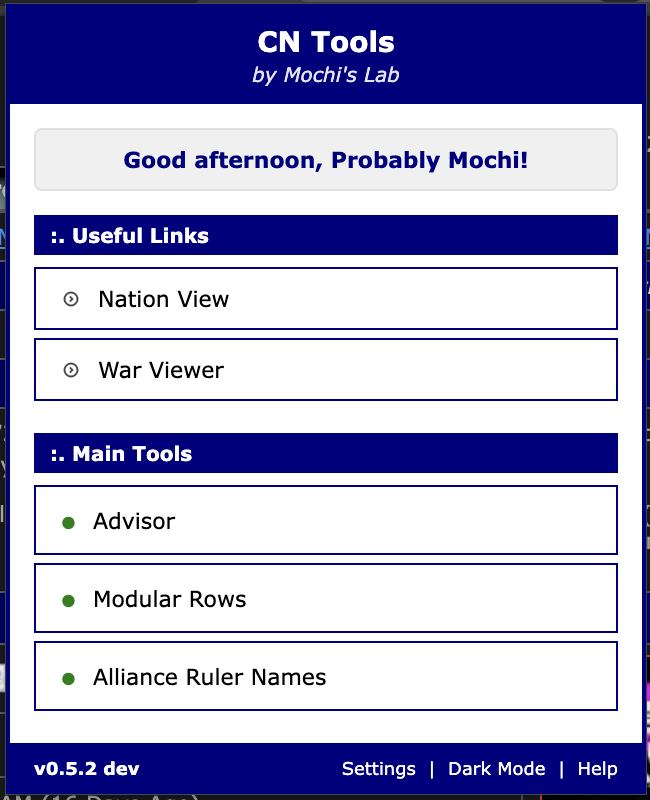
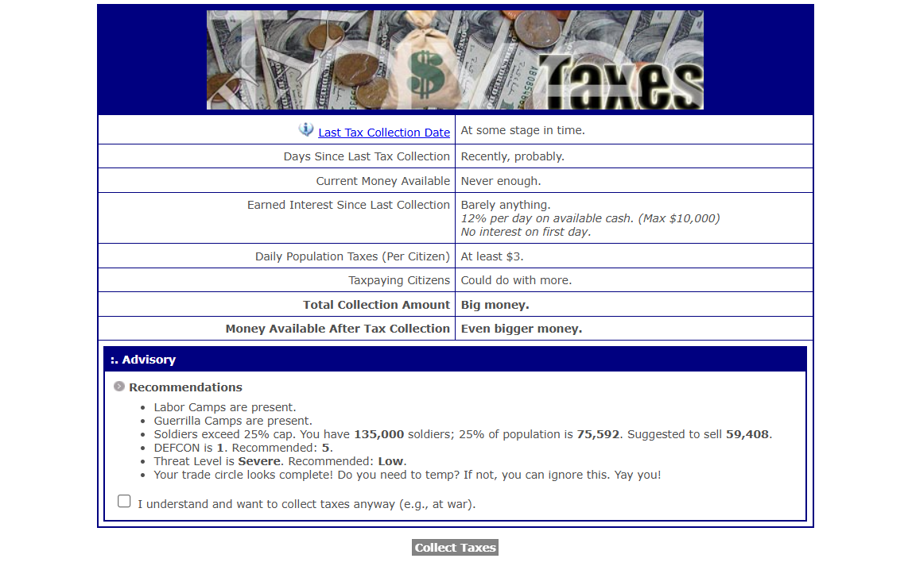
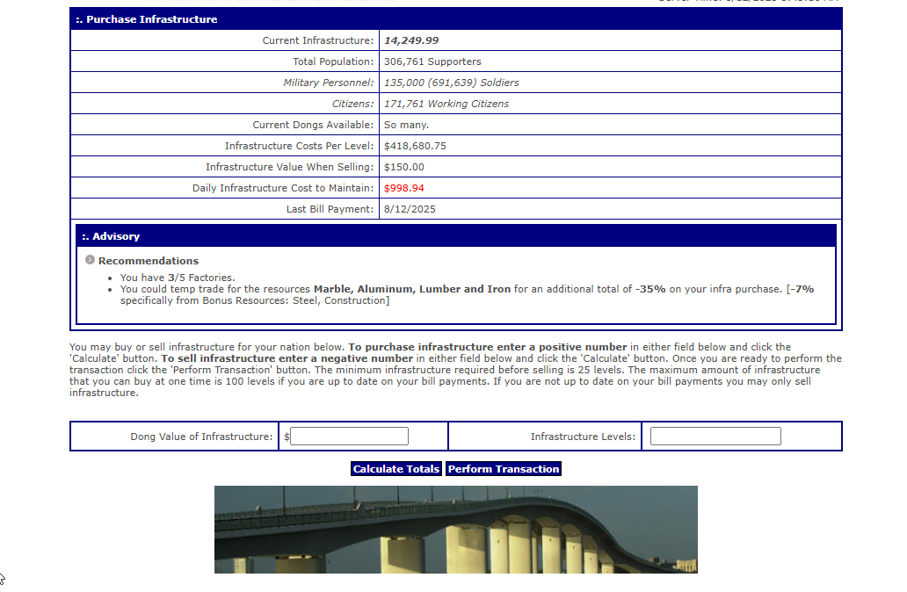
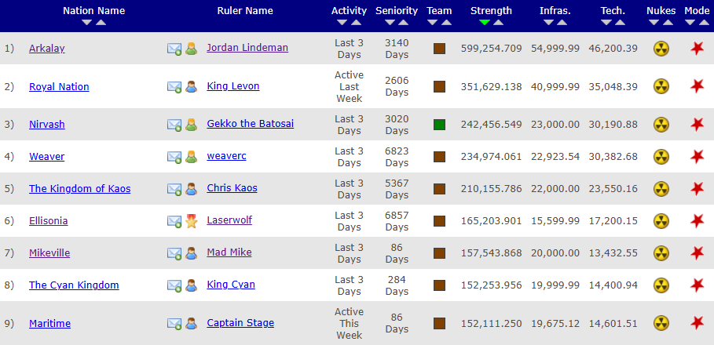
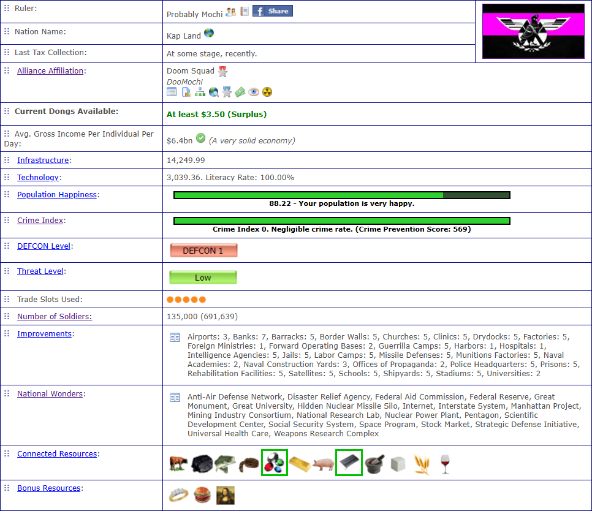

Chrome Extension under review!
A new update! The Chrome Extension has been submitted and is under review. I'll update when I have additional information but the plan is for private testing first to iron out any bugs and then open it up for everyone! I hope you are having a fantastic day.

CN Advisor v1.5b


An easy script that makes sure you won't forget anything when collecting as well as ensure you have factories and paid your bills when buying infra.
Disclaimer
August 5th, 2025
August 9th, 2025
August 9th, 2025
August 11th, 2025
August 12th, 2025
August 29th, 2025
CN Rulers [Alliance View] v1.2

It simply adds Ruler Names to the alliance display page.
Disclaimer
August 9th, 2025
August 11th, 2025
CN Modular v1.4

Imagine being able to move the table rows around.
Disclaimer
Sometime in 2024
August 9th, 2025
August 11th, 2025
August 11th, 2025
August 16th, 2025
August 16th, 2025
August 16th, 2025
August 31st, 2025
September 2nd, 2025
September 20th, 2025